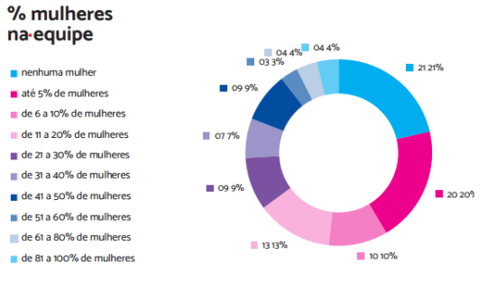

Sejam bem-vindas ao mulheres Tech
Seja muito bem-vinda ao Mulheres Tech, um universo dedicado a fortalecer, inspirar e conectar mulheres apaixonadas pela tecnologia! Aqui, não é apenas um site é uma comunidade acolhedora, projetada para apoiar todas as mulheres que buscam oportunidades e sucesso no vasto campo da inovação tecnológica.
Panorama da Atuação
Dentro das organizações, em 64,9% dos casos, as mulheres representam no máximo 20% das equipes de trabalho em tecnologia. Os principais cargos e áreas ocupados pelas mulheres nas equipes de tecnologia são: desenvolvedora, analista, gerência, project, tester e design. Esse percentual de cargos ocupados por mulheres na TI, poderia crescer, pois não é por falta de capacitação, pois de acordo com a ATN (Associação Telecentro de Informação e Negócio), 36.300 mulheres formadas na área buscam colocação no mercado de trabalho. Iniciativas como o curso da ATN podem ser ferramentas para combater o machismo que infelizmente ainda acontece na área, ao qual é um dos principais motivos pela pequena presença feminina no segmento.Segundo o estudo realizado pela CGEE (Centro de Gestão e Estudos Estratégicos), no campo acadêmico as mulheres já representam 60% desse universo, e com isso especialistas esperam que em breve tenha uma crescente ocupação em cargos na área da TI.
